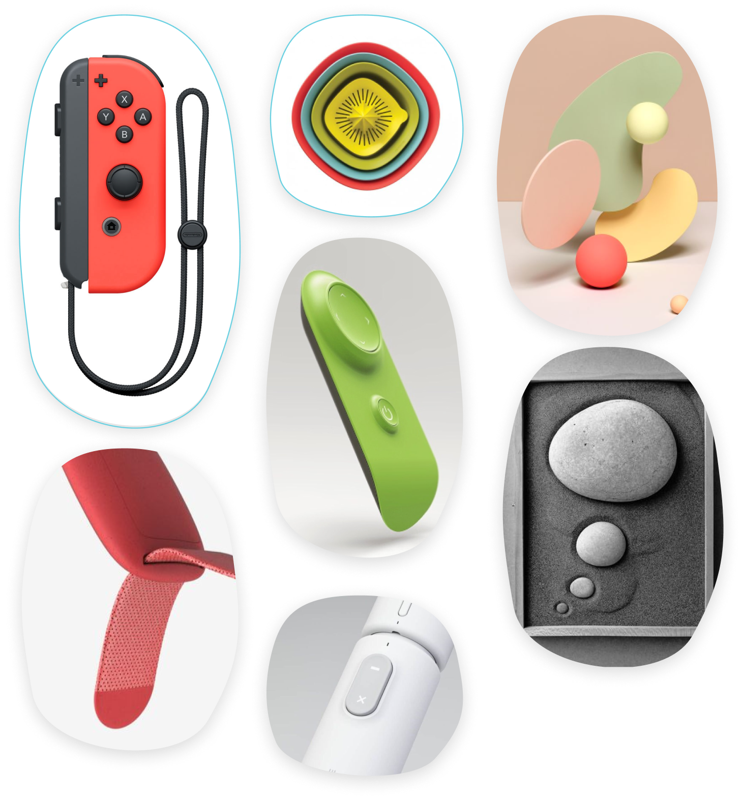

The challenge was to create a startup involved in the mobility context, in order to find and solve a problem that the people really have and need to solve.
Thanks to the interviews conducted to the parents as well, we've been able to build our user persona.
After we understood our persona, we then made a Cutomer journey, of which here are the most important steps.
Once we defined our design inspiration for our system, we drew some design proposals which led to the final one.
The products is presented in many customizable colorways in order to please and match all the children needs and tastes.

In order to structure the application we went through the information architecture process, with the aim to understand which were the most importart features and sections for the user to reach. A tab bar navigation was the chosen rapresentation, in order that the user could access easily to all the informations present in the app.
Based on the Information Architecture we’ve done before, I’ve been able to develop the wireframes of the app in order to test them out with the final user and understand how he would interact with the app, communicating with the product and the child.
Once the wireframes were confirmed by the final user, I went through the UI defining process, defining its elements and interaction based on IOS phones.
With our product the child and the parent will always be connected, in order to guarantee freedom in safety for the child and a relaxed monitoring for the parent.